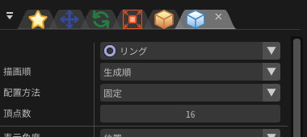

描画-リング¶
概要¶
描画の設定で、「リング」を選択した場合の描画及びパラメーターについて説明します。
「リング」を選択すると、円形のエフェクトが描画されます。
リングは外側、中心、内側の3重構造で構成されています。

パラメーター¶

「描画」ウインドウ
描画順¶
同じノードから発生するパーティクル間でもどのパーティクルから順番に描画するか指定します。 生成順の場合、最初に生成されたのが後ろの方に、生成順の逆の場合、最初に生成されたのが前に描画されます。
配置方法¶
リングをパーティクルに対してどのように配置するか指定します。 「ビルボード」の場合、リングは常に視点側を向きます。「Z軸回転ビルボード」の場合、Z軸の回転は固定しつつ視点側をむきます。 「Y軸固定」の場合、Y軸の回転は固定しつつ視点側をむきます。「固定」の場合、リングはパーティクルの回転に従います。
頂点数¶
表示する図形の角の数です。 角が多いほど円に近くなりますが、あえて少なくして多角形にすることもできます。
外輪¶
円の外側の部分の形です。xの値は半径を指定します。yの値は高さを指定します。
内輪¶
円の内側の部分の形です。xの値は半径を指定します。yの値は高さを指定します。
中心比率¶
円の中心部分の位置の比率です。 内側に中心部分を配置する場合、0.0を指定します。 外側に中心部分を配置する場合、1.0を指定します。 中央に中心部分を配置する場合、0.5を指定します。
外輪色¶
円の外側の部分の色です。
中心色¶
円の中心の部分の色です。
内輪色¶
円の内側の部分の色です。